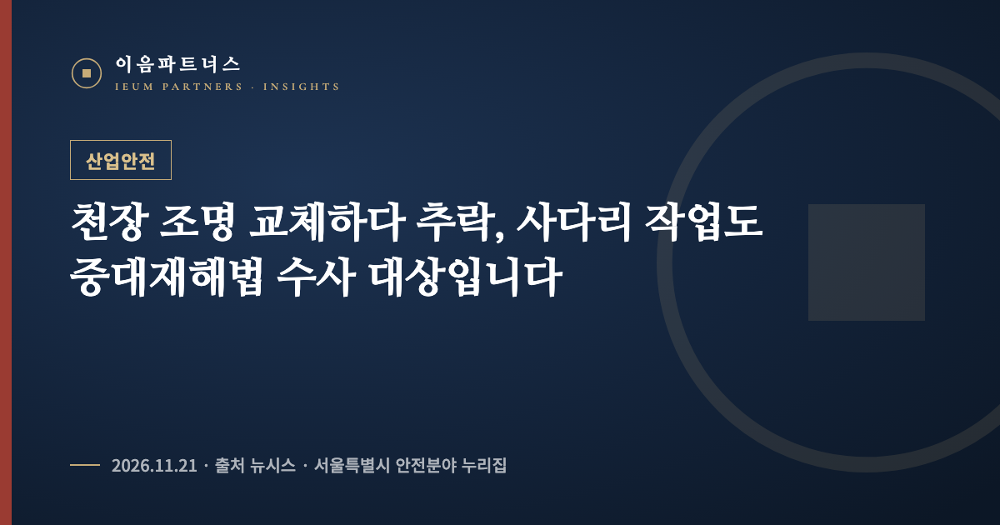

천장 조명 교체하다 추락, 사다리 작업도 중대재해법 수사 대상입니다

천장 조명 교체처럼 짧게 끝나는 일은 사다리 하나로 처리하는 경우가 많습니다. 그런데 2026년 11월 경북 경주의 한 아파트에서 조명을 교체하던 노동자가 사다리에서 떨어져 숨졌고, 노동당국은 중대재해처벌법 위반 여부 수사에 들어갔습니다. 이 글에서는 사고 내용과 낮은 높이 작업의 위험, 대표님이 알아 둘 책임을 정리합니다.
건물 관리, 시설 유지보수, 매장 인테리어처럼 사다리를 자주 쓰는 업종이라면 남의 일이 아닙니다. 우리 회사 작업 방식이나 안전 관리 체계를 점검해 보고 싶으시다면 카카오톡 채널 이음파트너스로 문의해 주세요.
무슨 일이 있었나
사고는 2026년 11월 20일 오후 2시 57분께 경북 경주시의 한 아파트에서 일어났습니다. 관리업체 소속 55세 노동자가 아파트 1층 천장 조명을 교체하다 떨어졌고, 치료를 받던 중 다음 날 숨졌습니다. 뉴시스는 노동자가 “이동식 사다리가 펼쳐지면서 약 3.3m 아래로 떨어진 것으로 조사됐다”고 전했습니다(뉴시스).
고용노동부 포항지청은 즉시 사고 조사에 착수하고 작업중지 조치를 내렸습니다. 노동당국은 정확한 원인과 함께 산업안전보건법과 중대재해처벌법 위반 여부를 수사할 방침입니다.
3m 남짓한 높이도 중대재해가 됩니다
중대재해처벌법은 사망자가 1명 이상 생기거나, 같은 사고로 6개월 이상 치료가 필요한 부상자가 2명 이상 생기는 경우 등을 중대산업재해로 봅니다(뉴시스). 법은 작업 높이나 시간이 아니라 사망·부상이라는 결과로 중대산업재해를 판단합니다.
사다리는 발판이 좁고 몸을 지탱할 곳이 적어 균형을 잃기 쉽습니다. 이번 사고처럼 사다리 자체가 펼쳐지거나 미끄러지면 작업자가 손쓸 틈 없이 떨어질 수 있습니다. 높은 곳 작업은 안전한 작업발판과 추락 방지 조치를 먼저 갖추는 것이 기본입니다.
대표에게는 어떤 책임이 따를 수 있나
중대재해처벌법은 안전보건 확보 의무를 어겨 중대산업재해가 생기면 경영책임자와 법인을 함께 처벌합니다. 처벌 내용은 다음과 같습니다(서울특별시 안전분야 누리집).
| 구분 | 내용 |
|---|---|
| 사망 시 경영책임자 | 1년 이상의 징역 또는 10억 원 이하의 벌금(함께 부과 가능) |
| 사망 시 법인 | 50억 원 이하의 벌금 |
| 부상·질병 시 | 경영책임자 7년 이하의 징역 또는 1억 원 이하의 벌금, 법인 10억 원 이하의 벌금 |
| 손해배상 | 손해액의 5배 이하 |
대표님이 지금 확인할 것
- 조명 교체·설비 점검처럼 높은 곳에서 하는 일상 작업을 목록으로 정리해 두었는지
- 사다리 대신 쓸 수 있는 작업발판이나 고소작업대가 준비되어 있는지
- 사다리를 쓸 때 펼침 고정장치와 미끄럼 방지 상태를 작업 전에 확인하는지
- 혼자 하는 높은 곳 작업을 줄이고, 옆에서 잡아 주는 사람을 두도록 정해 두었는지
참고한 자료
- 경주 아파트서 조명 교체하던 50대 추락사…중대재해법 조사 — 뉴시스 (2026.11.21)
- 중대재해처벌법 처벌내용 — 서울특별시 안전분야 누리집 (2026.04.03)
시설 관리나 유지보수 업무가 많은 회사라면 우리 회사 안전보건 관리 체계를 카카오톡 채널 이음파트너스에서 함께 점검해 보세요.
※ 이 글은 일반적인 정보 제공을 위한 것으로, 개별 사안은 세무사·노무사 등 전문가와 함께 확인하시기 바랍니다.